Behind Every AI Answer
An interactive AI rationale demonstrator — a plugin that makes AI's thinking and search process visible, so people can see, question, and adjust how an answer is formed instead of just receiving it.
What is Nexus
Nexus is a plugin designed for use across a wide range of AI search engines, aiming to make the AI thinking and search process visible. It shows how AI breaks down a question, integrates different types of information sources, and generates an answer — while letting users adjust the source balance and reshape how the answer is formed. By shifting people from passively accepting answers to actively understanding and participating in the answer-generation process, Nexus seeks to help people build a clearer and more tangible sense of trust in AI.
Why Nexus
of the global population were AI users by the second half of 2025 — approximately 1.3 billion people.
Source: Microsoft, n.d.
Border: the AI trust gap. This growth has also exposed clear trust issues. Many users question AI because they cannot tell whether its answers are accurate or reliable, which ultimately weakens trust in chatbots as a whole.
User group. Users who feel uncertain about the accuracy, transparency, and trustworthiness of AI-generated answers.
Problem severity distribution
From problem to design response
Users who feel uncertain about the accuracy, transparency, and trustworthiness of AI-generated answers.
Help users move from passively receiving answers to actively understanding and shaping them — building a clearer, more tangible sense of trust in AI.
Nexus makes the hidden process behind AI answers visible through three core design elements — transforming AI from a black box into a process users can see, understand, and influence.
Visually extracts and breaks down the key points behind a user's question, so people can see exactly how AI interpreted what they asked — with a summary and adoption rate for each point.
Reveals where AI gathers its information from, visualising the search process in real time and showing the proportion of each source behind the final answer.
Lets users manually adjust the proportion of each information source, then refresh to pull in new web pages, papers, and results that match.
Testing with real users
Participant selection. Three participants were invited for feedback: two design master's students with regular AI chatbot experience, and one non-design working professional with limited AI use. This combination allowed us to gather more balanced and comprehensive feedback from both design-aware and general users.
Six lo-fi screens tested with participants
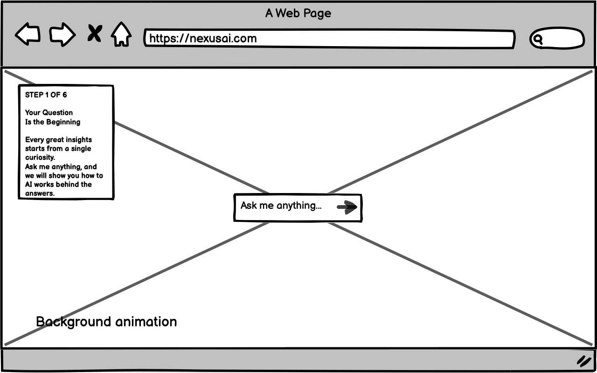
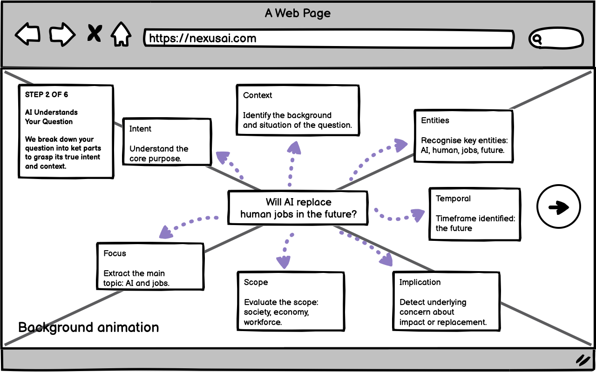
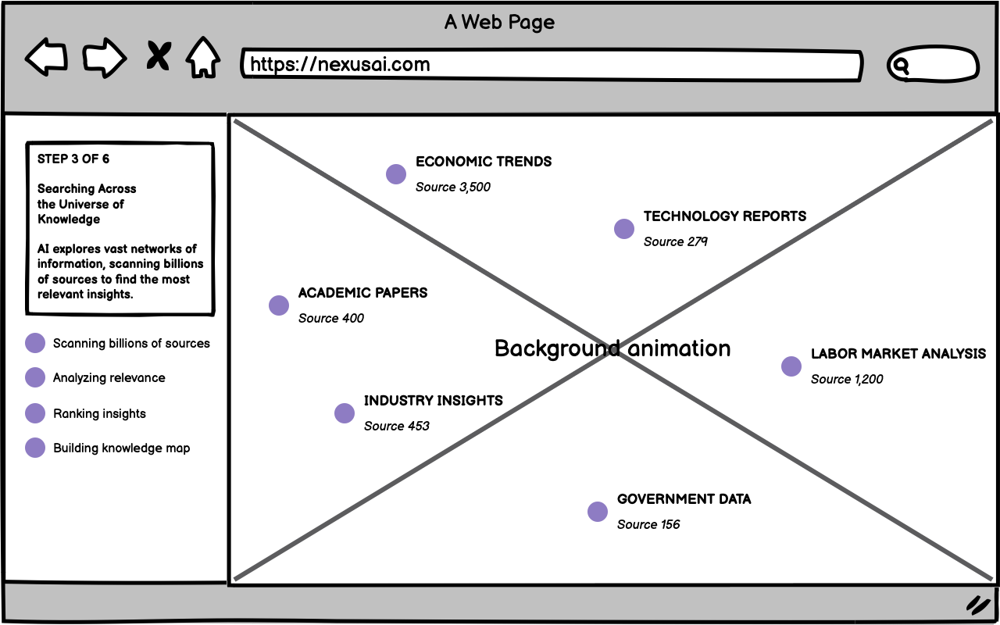
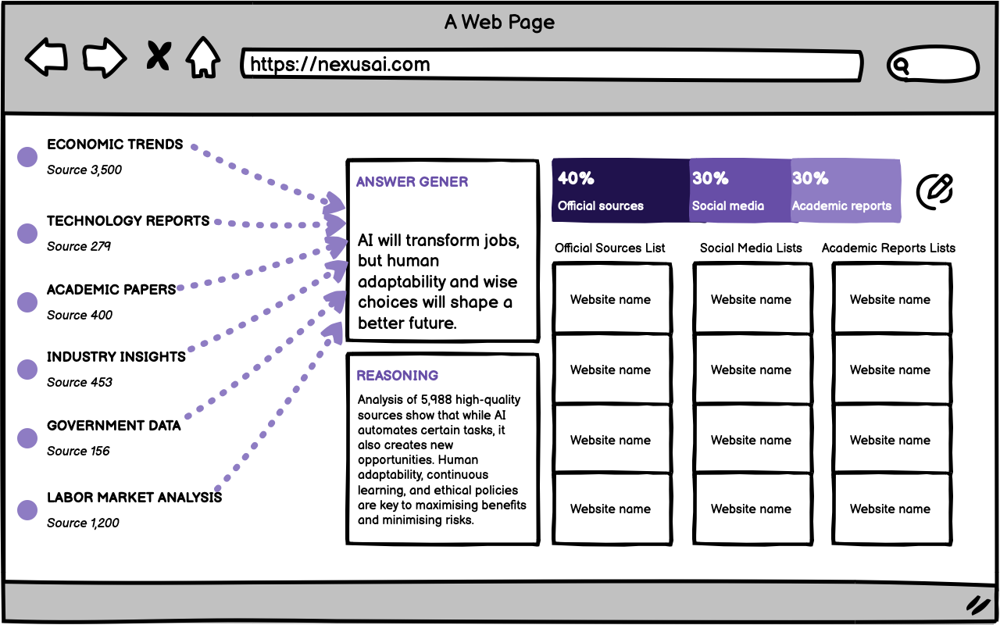
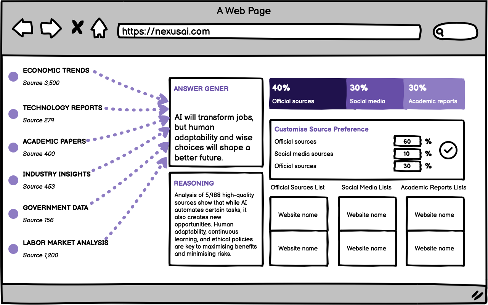
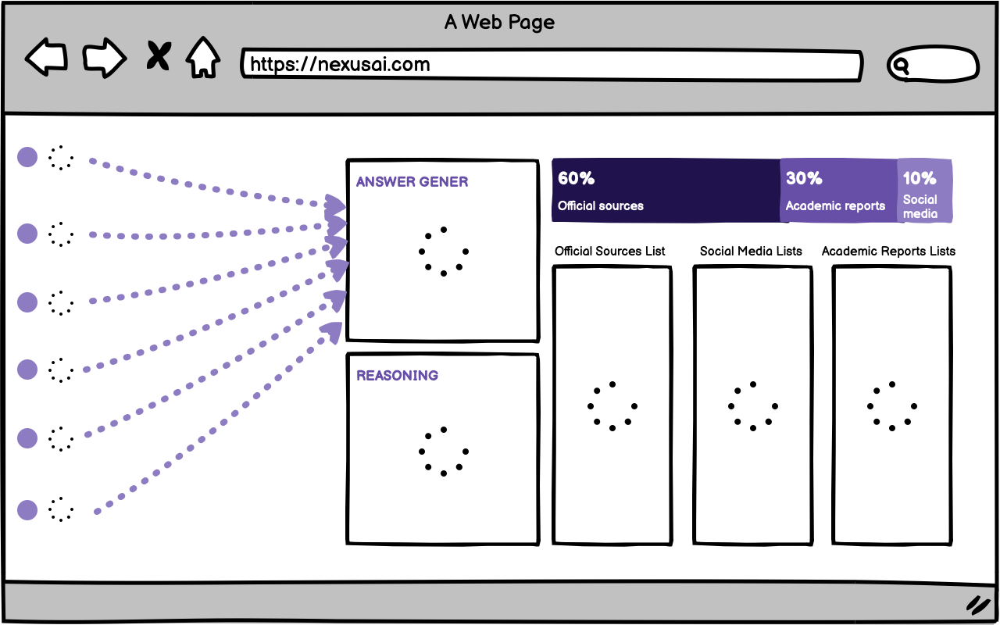
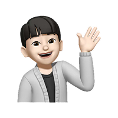
The refined flow
From typing a question to seeing exactly where the answer came from — the five hi-fi screens below walk through the full Nexus flow.
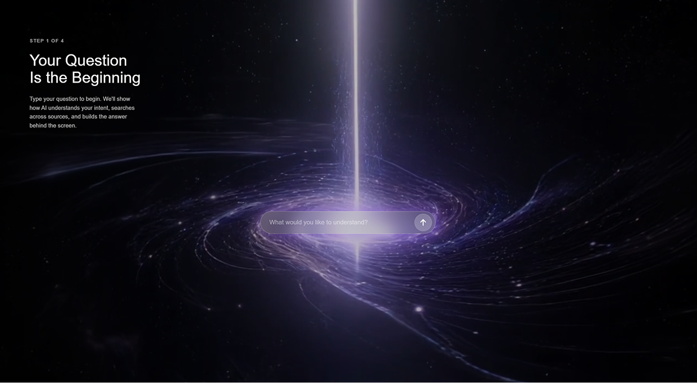
1 2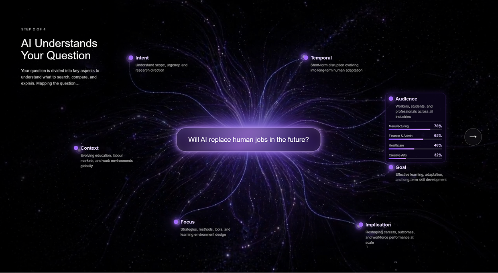
3 4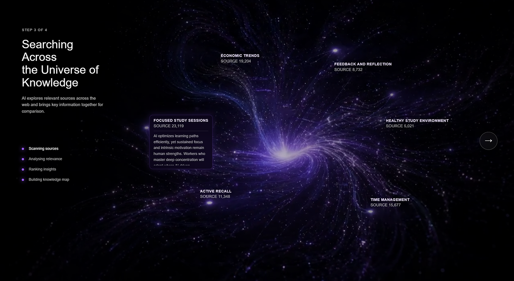
5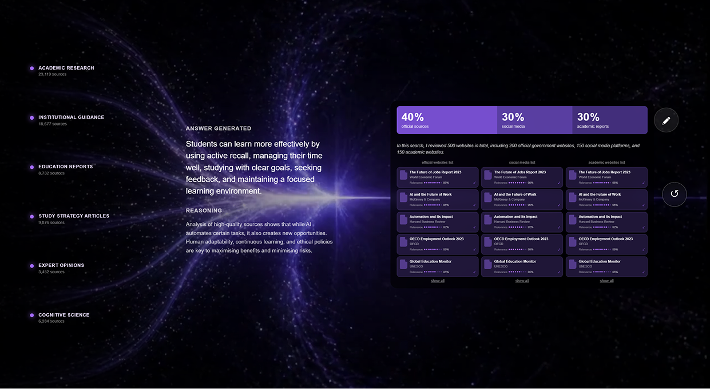
6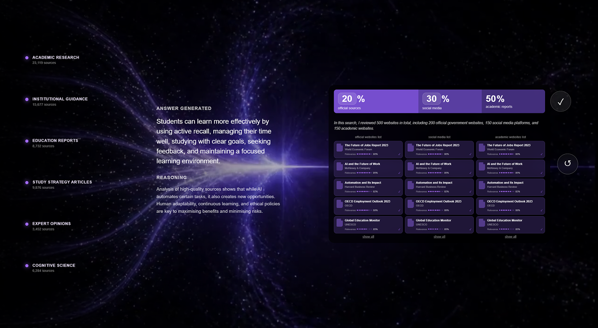
7Nexus is one of several directions in my portfolio — from visual and interaction design to AIGC experiments.
View Portfolio →